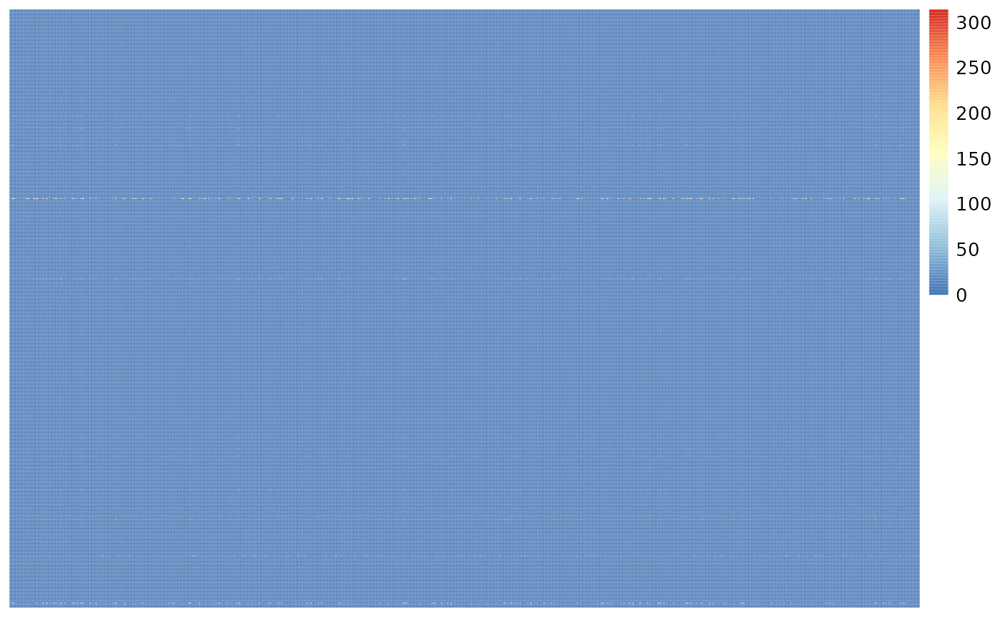
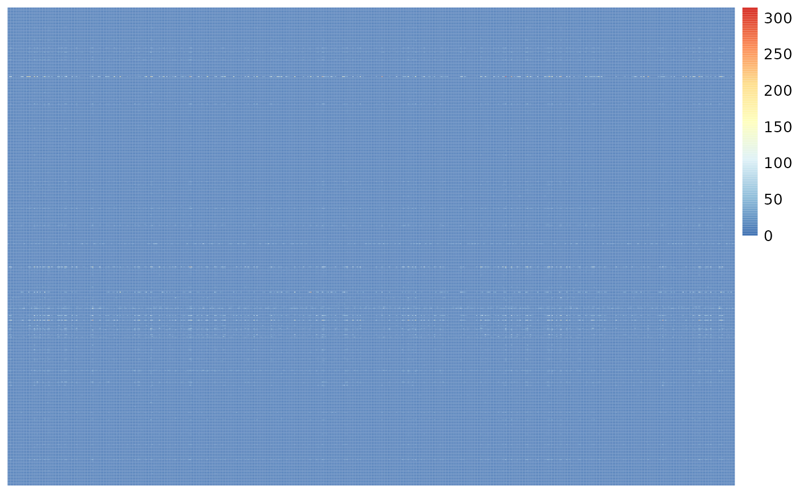
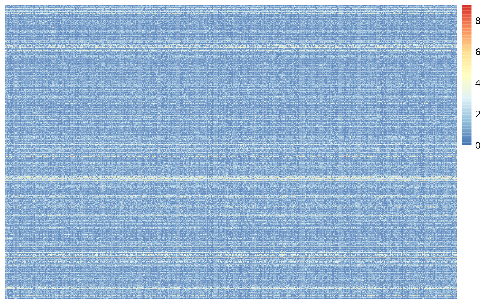

library(pheatmap)
library(SingleCellExperiment)
#> Loading required package: SummarizedExperiment
#> Loading required package: MatrixGenerics
#> Loading required package: matrixStats
#>
#> Attaching package: 'MatrixGenerics'
#> The following objects are masked from 'package:matrixStats':
#>
#> colAlls, colAnyNAs, colAnys, colAvgsPerRowSet, colCollapse,
#> colCounts, colCummaxs, colCummins, colCumprods, colCumsums,
#> colDiffs, colIQRDiffs, colIQRs, colLogSumExps, colMadDiffs,
#> colMads, colMaxs, colMeans2, colMedians, colMins, colOrderStats,
#> colProds, colQuantiles, colRanges, colRanks, colSdDiffs, colSds,
#> colSums2, colTabulates, colVarDiffs, colVars, colWeightedMads,
#> colWeightedMeans, colWeightedMedians, colWeightedSds,
#> colWeightedVars, rowAlls, rowAnyNAs, rowAnys, rowAvgsPerColSet,
#> rowCollapse, rowCounts, rowCummaxs, rowCummins, rowCumprods,
#> rowCumsums, rowDiffs, rowIQRDiffs, rowIQRs, rowLogSumExps,
#> rowMadDiffs, rowMads, rowMaxs, rowMeans2, rowMedians, rowMins,
#> rowOrderStats, rowProds, rowQuantiles, rowRanges, rowRanks,
#> rowSdDiffs, rowSds, rowSums2, rowTabulates, rowVarDiffs, rowVars,
#> rowWeightedMads, rowWeightedMeans, rowWeightedMedians,
#> rowWeightedSds, rowWeightedVars
#> Loading required package: GenomicRanges
#> Loading required package: stats4
#> Loading required package: BiocGenerics
#>
#> Attaching package: 'BiocGenerics'
#> The following objects are masked from 'package:stats':
#>
#> IQR, mad, sd, var, xtabs
#> The following objects are masked from 'package:base':
#>
#> anyDuplicated, append, as.data.frame, basename, cbind, colnames,
#> dirname, do.call, duplicated, eval, evalq, Filter, Find, get, grep,
#> grepl, intersect, is.unsorted, lapply, Map, mapply, match, mget,
#> order, paste, pmax, pmax.int, pmin, pmin.int, Position, rank,
#> rbind, Reduce, rownames, sapply, setdiff, sort, table, tapply,
#> union, unique, unsplit, which.max, which.min
#> Loading required package: S4Vectors
#>
#> Attaching package: 'S4Vectors'
#> The following objects are masked from 'package:base':
#>
#> expand.grid, I, unname
#> Loading required package: IRanges
#> Loading required package: GenomeInfoDb
#> Loading required package: Biobase
#> Welcome to Bioconductor
#>
#> Vignettes contain introductory material; view with
#> 'browseVignettes()'. To cite Bioconductor, see
#> 'citation("Biobase")', and for packages 'citation("pkgname")'.
#>
#> Attaching package: 'Biobase'
#> The following object is masked from 'package:MatrixGenerics':
#>
#> rowMedians
#> The following objects are masked from 'package:matrixStats':
#>
#> anyMissing, rowMedians
library(dplyr)
#>
#> Attaching package: 'dplyr'
#> The following object is masked from 'package:Biobase':
#>
#> combine
#> The following objects are masked from 'package:GenomicRanges':
#>
#> intersect, setdiff, union
#> The following object is masked from 'package:GenomeInfoDb':
#>
#> intersect
#> The following objects are masked from 'package:IRanges':
#>
#> collapse, desc, intersect, setdiff, slice, union
#> The following objects are masked from 'package:S4Vectors':
#>
#> first, intersect, rename, setdiff, setequal, union
#> The following objects are masked from 'package:BiocGenerics':
#>
#> combine, intersect, setdiff, union
#> The following object is masked from 'package:matrixStats':
#>
#> count
#> The following objects are masked from 'package:stats':
#>
#> filter, lag
#> The following objects are masked from 'package:base':
#>
#> intersect, setdiff, setequal, union
library(ggplot2)
library(tidyr)
#>
#> Attaching package: 'tidyr'
#> The following object is masked from 'package:S4Vectors':
#>
#> expand
library(TREG)
# Download and save a local cache of the data avlaible at:
# https://github.com/LieberInstitute/10xPilot_snRNAseq-human#processed-data
bfc <- BiocFileCache::BiocFileCache()
url <- "https://libd-snrnaseq-pilot.s3.us-east-2.amazonaws.com/SCE_DLPFC-n3_tran-etal.rda"
data <- BiocFileCache::bfcrpath(url, x = bfc)
#> adding rname 'https://libd-snrnaseq-pilot.s3.us-east-2.amazonaws.com/SCE_DLPFC-n3_tran-etal.rda'
load(data, verbose = TRUE)
#> Loading objects:
#> sce.dlpfc.tranPrep Data
Filter and refine data to cell types of interest. We are combining all of the Excit, Inhib subtypes.
## Explore the dimensions and cell type annotations
dim(sce.dlpfc.tran)
#> [1] 33538 11202
table(sce.dlpfc.tran$cellType)
#>
#> Astro Excit_A Excit_B Excit_C Excit_D Excit_E Excit_F
#> 782 529 773 524 132 187 243
#> Inhib_A Inhib_B Inhib_C Inhib_D Inhib_E Inhib_F Macrophage
#> 333 454 365 413 7 8 10
#> Micro Mural Oligo OPC Tcell
#> 388 18 5455 572 9
## Use a lower resolution of cell type annotation
sce.dlpfc.tran$cellType.broad <- gsub("_[A-Z]$", "", sce.dlpfc.tran$cellType)
(cell_type_tab <- table(sce.dlpfc.tran$cellType.broad))
#>
#> Astro Excit Inhib Macrophage Micro Mural Oligo
#> 782 2388 1580 10 388 18 5455
#> OPC Tcell
#> 572 9Drop any groups with < 50 cells.
## Find cell types with < 50 cells
ct_drop <- names(cell_type_tab)[cell_type_tab < 50]
## Filter columns of sce object
sce.dlpfc.tran <- sce.dlpfc.tran[, !sce.dlpfc.tran$cellType.broad %in% ct_drop]
dim(sce.dlpfc.tran)
#> [1] 33538 11165Filter Genes
Single Nucleus data is often very sparse (lots of zeros in the count data), this dataset is 88% sparse. We can illistrate this in the heat map which is very blue.
## this data is 88% sparse
sum(assays(sce.dlpfc.tran)$counts == 0) / (nrow(sce.dlpfc.tran) * ncol(sce.dlpfc.tran))
#> [1] 0.8839022
## lets make a heatmap of the first 1k genes and 500 cells
count_test <- as.matrix(assays(sce.dlpfc.tran)$counts[1:1000, 1:500])
pheatmap(count_test,
cluster_rows = FALSE,
cluster_cols = FALSE,
show_rownames = FALSE,
show_colnames = FALSE
)
Filter to Top 50% Expression
Determine the median expression of genes over all rows, drop all the genes that are below this limit.
row_means <- rowMeans(assays(sce.dlpfc.tran)$logcounts)
(median_row_means <- median(row_means))
#> [1] 0.01405562
sce.dlpfc.tran <- sce.dlpfc.tran[row_means > median_row_means, ]
dim(sce.dlpfc.tran)
#> [1] 16769 11165After this filter lets check sparsity and make a heatmap of the first 1k genes and 500 cells. We are seeing more non-blue!
## this data down to 77% sparse
sum(assays(sce.dlpfc.tran)$counts == 0) / (nrow(sce.dlpfc.tran) * ncol(sce.dlpfc.tran))
#> [1] 0.7713423
## replot heatmap
count_test <- as.matrix(assays(sce.dlpfc.tran)$counts[1:1000, 1:500])
pheatmap::pheatmap(count_test,
cluster_rows = FALSE,
cluster_cols = FALSE,
show_rownames = FALSE,
show_colnames = FALSE
)
Calculate the Proportion of Zeros and Pick Cutoff
For each group (let’s use cellType.broad) get the proportion of zeros for each gene
# get prop zero for each gene for each cell type
prop_zeros <- get_prop_zero(sce.dlpfc.tran, group_col = "cellType.broad")
head(prop_zeros)
#> Astro Excit Inhib Micro Oligo OPC
#> AL627309.1 0.9667519 0.7784757 0.8487342 0.9536082 0.9552704 0.9685315
#> AL669831.5 0.8836317 0.2361809 0.4879747 0.8608247 0.8445463 0.7657343
#> LINC00115 0.9948849 0.9493300 0.9759494 0.9845361 0.9891842 0.9930070
#> NOC2L 0.9347826 0.6168342 0.7556962 0.9536082 0.9365720 0.8811189
#> KLHL17 0.9859335 0.8986600 0.9360759 0.9922680 0.9963336 0.9877622
#> HES4 0.8695652 0.7357621 0.6892405 0.9974227 0.9906508 0.9737762To determine a good cutoff for filtering lets examine the distribution of these proportions by group.
# Need to pivot data
prop_zero_long <- prop_zeros %>%
tibble::rownames_to_column("Gene") %>%
pivot_longer(!Gene, names_to = "Group", values_to = "prop_zero")
# Plot histograms
(prop_zero_histogram <- ggplot(
data = prop_zero_long,
aes(x = prop_zero, fill = Group)
) +
geom_histogram(binwidth = 0.05) +
facet_wrap(~Group))
Looks like around 0.9 the densities peak, we’ll set that as the cutoff.
propZero_limit <- 0.9
prop_zero_histogram +
geom_vline(xintercept = propZero_limit, color = "red", linetype = "dashed")
Filter by the Max Proportion of Zeros
Use the cutoff to filter the remaining genes. Only 4k or ~11% of genes pass with this cutoff. Filter the sce object to this set of genes.
## get a list of filtered genes
filtered_genes <- filter_prop_zero(prop_zeros, cutoff = propZero_limit)
## How many genes pass the filter?
length(filtered_genes)
#> [1] 4005
## What % of genes is this
length(filtered_genes) / nrow(sce.dlpfc.tran)
#> [1] 0.2388336
## Filter the sce object
sce.dlpfc.tran <- sce.dlpfc.tran[filtered_genes, ]One last check of the sparsity and heatmap.
## this data down to 50% sparse
sum(assays(sce.dlpfc.tran)$counts == 0) / (nrow(sce.dlpfc.tran) * ncol(sce.dlpfc.tran))
#> [1] 0.5010587
## replot heatmap
count_test <- as.matrix(assays(sce.dlpfc.tran)$counts[1:1000, 1:500])
## Just to help visualization we'll cap the counts at 300
count_test[count_test > 300] <- 300
pheatmap::pheatmap(count_test,
cluster_rows = FALSE,
cluster_cols = FALSE,
show_rownames = FALSE,
show_colnames = FALSE
)
Run Rank Invariance
To get the rank invariance (RI), the rank of the genes across the cells in a group, and between groups is considered. One way to calculate RI is to dine the group rank values, and cell rank values separately, then combine them as shown below. The genes with the top RI values are the best candidate TREGs.
## Get the rank of the gene in each group
group_rank <- rank_group(sce.dlpfc.tran, group_col = "cellType.broad")
## Get the rank of the gene for each cell
cell_rank <- rank_cells(sce.dlpfc.tran, group_col = "cellType.broad")
## Use both rankings to calculate rank_invariance
rank_invar <- rank_invariance(group_rank, cell_rank)
head(rank_invar[sort.list(rank_invar, decreasing = TRUE)])
#> MALAT1 CTNND2 FTX RERE FAM155A GNAQ
#> 4005 4004 4003 4002 4001 4000The rank_invariance_express function combines these three steps into one function, and achieves the same results.
rank_invar2 <- rank_invariance_express(sce.dlpfc.tran, group_col = "cellType.broad")
head(rank_invar2[sort.list(rank_invar2, decreasing = TRUE)])
#> MALAT1 CTNND2 FTX RERE FAM155A GNAQ
#> 4005 4004 4003 4002 4001 4000